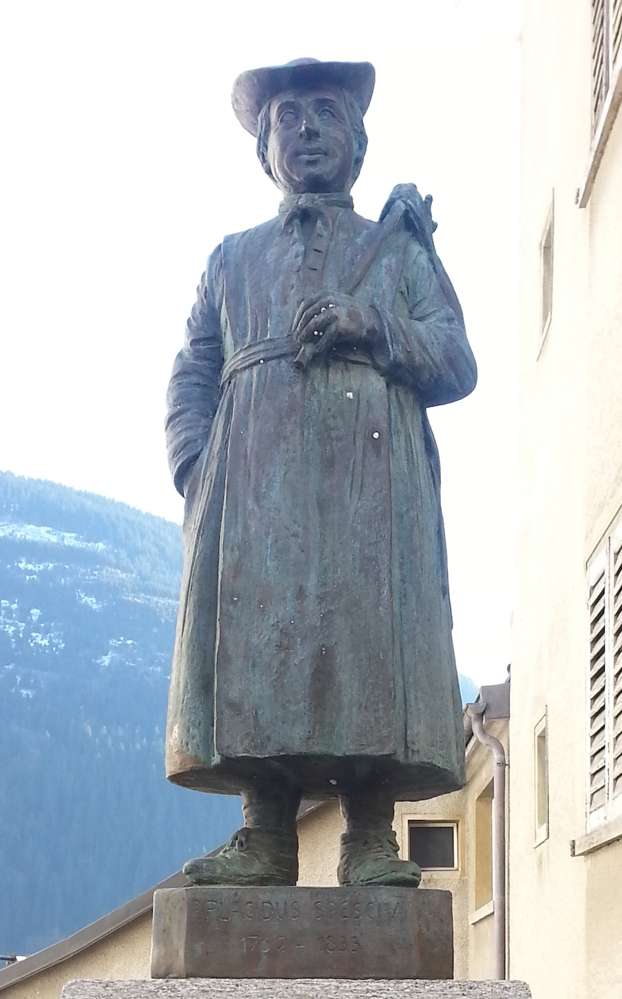

The Story behind Plazi

Placidus a Spescha was not only one of the first alpinists and naturalists but was also deeply committed to the ideals of the Enlightenment. He often ran afoul of his superiors who felt he neglected his priestly duties in favor of his scientific pursuits. Worse yet, he further upset the status quo through his sympathy and support of the French in the follow-up of the wars spurred by the French Revolution which brought invading French and Austrian troops into his home, Disentis, in the Vorderrhein Tal in Switzerland. A substantial part of his notes were lost when his cloister burned down, or perhaps because it had been part of a contribution to the French during the war, supposedly finding its way ultimately to the Muséum Nationale d’Histoire Naturelle in Paris.
Plazi came to life at a meeting of our Digital Library project in Karlsruhe on 25 March, 2007. Until then our activities had been channeled through the American Museum of Natural History’s server which, due to administrative restrictions, increasingly proved to be a barrier to future development.
Another major hurdle we faced was the issue of copyright. Copyright is one of the biggest impediments for charting and monitoring global biodiversity. The well over 500 million pages of scientific publications-to which every year are added descriptions of more than 20,000 new species–contain a vast amount of knowledge. Were this content at our fingertips or better a mouse-click away, we would work with one of the richest scientific resources. But copyright prevents this. Moreover, misunderstanding (or overly prudent interpretation) of copyright in our scientific domain, where publishing aims to disseminate new research to the widest possible audience, prohibits the introduction and use of this huge body of knowledge into the digital realm.
Switzerland, the home of Placidus Spescha, has, like each country, its own copyright law based on the concept of the “werk” (work). From a legal point of view, we assume that descriptions, and most likely the entire scientific publication, do not qualify as such a work, since they are not sufficiently original. Taxonomic description follows strict rules set by the International Codes of Nomenclature on which content is required for a valid description, as well as other standards developed in the particular domains of zoololgy, botany, mycology or virology. Because these codes mandate that descriptions have to be published, they have the quality of a quasi-legal document. Additionally, by their very nature, descriptions of species are presentations of data repeated for the descriptions and re-descriptions of millions of new species in journals that in most cases follow peer-review.
Plazi provides access to the content of taxonomic literature in a variety of formats. Whenever possible, a PDF version of the original publication is made available on the Biodiversity Literature Repository hosted on CERN’s Zenodo. An increasing number of publications also have been been encoded in the TaxonX XML schema which identifies and delineates the significant “atoms” of information that comprise taxonomic descriptions in order to facilitate retrieval, anlysis, and integration with other e-science resources. During the mark up process, the documents are enhanced with links to name servers, digital bibliographies, or specimen databases. Our TreatmentBank provides a search interface to the marked up descriptions allowing for mining a rich source of taxonomic data as well as visualization of the content.
Following Placidus Spescha’s tradition, our ideas, methods, and data will be shared and discussed at meetings, through TreatmentBank, in newspaper articles and any other avenue which might enlighten our fellow citizens.